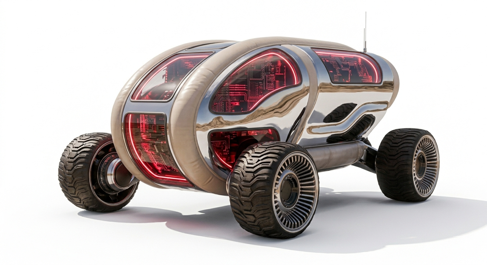
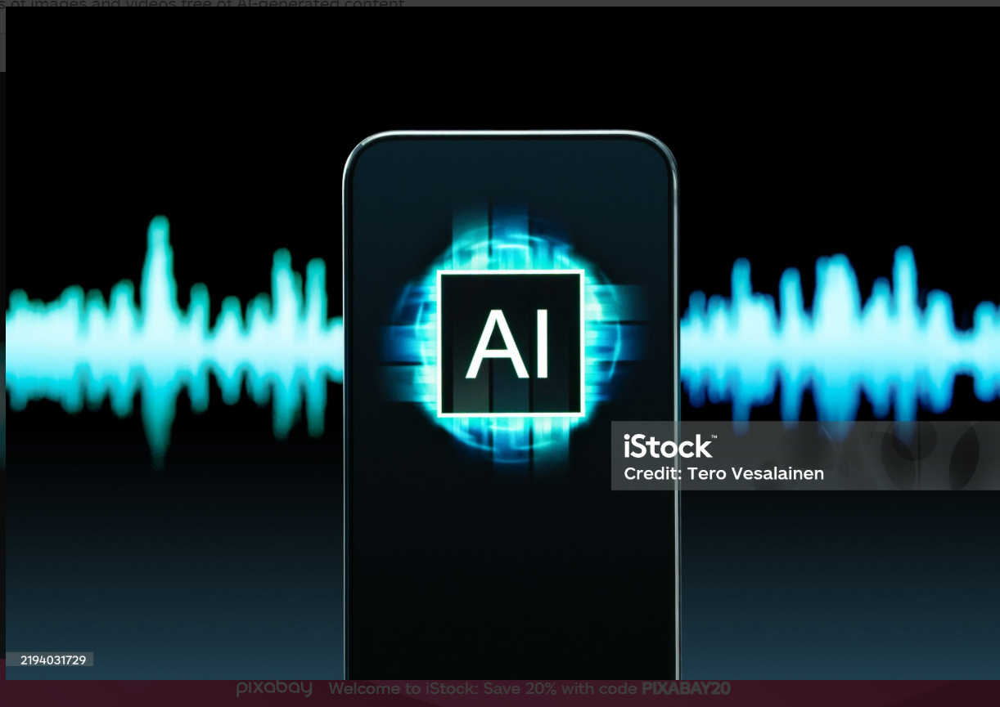
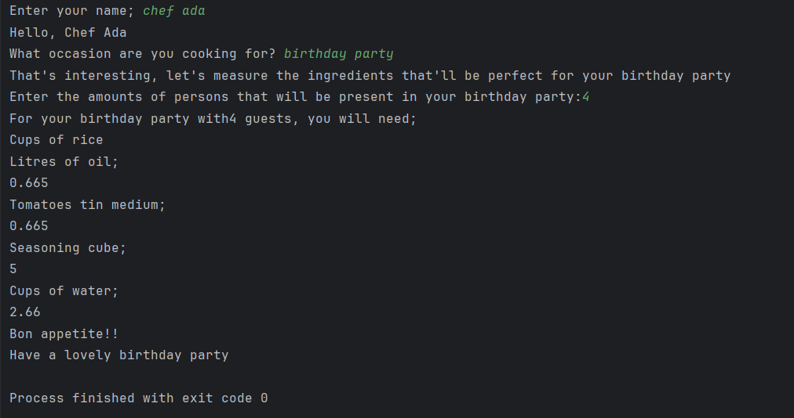

Rover X
Rover X is a cutting-edge robotic exploration vehicle designed to navigate and study extraterrestrial terrains. Equipped with advanced sensors, cameras, and scientific instruments, Rover X is capable of conducting detailed analyses of soil, rocks, and atmospheric conditions on distant planets. Its autonomous nature allows it to traverse challenging landscapes while transmitting valuable data back to Earth for further research and discovery. Rover X represents a significant leap forward in space exploration technology, enabling scientists to gain deeper insights into the mysteries of our solar system and beyond.

Conver TEE
Conver TEE is a revolutionary technology that enables space enthusiasts and professionals to experience what the "almost unreachable" part of the universe sound like. By utilizing advanced audio processing techniques and data from space missions, Conver TEE converts space visuals to immersive soundscapes that allow users to listen to the cosmic phenomena occurring in distant galaxies, nebulae, and other celestial bodies. This innovative technology provides a unique way to connect with the universe, offering an auditory journey through the cosmos that complements visual observations and enhances our understanding of the vastness of space.

Astronomy game
The Astronomy Game is an interactive and educational Command line gaming experience designed to engage players in the world outside ours. It combines elements of gaming with astronomy education, allowing players to explore the cosmos, learn about celestial bodies, and understand the fundamental principles of space science. The game aims to inspire curiosity and foster a deeper appreciation for the wonders of the universe while providing an entertaining and immersive gaming experience.

Scale My Jellof
Scale My Jellof is a innovative app that allows users to scale their jellof recipes to any desired serving size. Running on Command Line interface, Scale my Jellof utilizes powerful scaling algorithms, helping users easily adjust ingredient quantities while maintaining the perfect balance of flavors and textures. Scale My Jellof helps users accurately scale their jellof in less than a minute. Whether you're cooking for a small family dinner or a large gathering, Scale My Jellof ensures that your jellof turns out delicious every time, regardless of the number of servings needed. With its user-friendly interface and accurate scaling capabilities, Scale My Jellof is the ultimate tool for jellof lovers looking to create the perfect dish for any occasion.

ATM Simulator
The ATM Simulator is a command-line application that mimics the functionality of a real-world ATM machine. It allows users to perform common banking operations such as checking account balance, depositing funds,update account details and withdrawing money. The simulator provides a realistic environment for users to practice and become familiar with ATM operations without the risk of financial loss.

Shopping App
The Shopping App is an application that provides a simple and efficient way to manage shopping lists and track items. It allows users to add, remove, and update items in their shopping cart, set quantities, and organize their purchases. The app also includes features for setting reminders and generating reports to help users stay organized and make informed decisions while shopping.